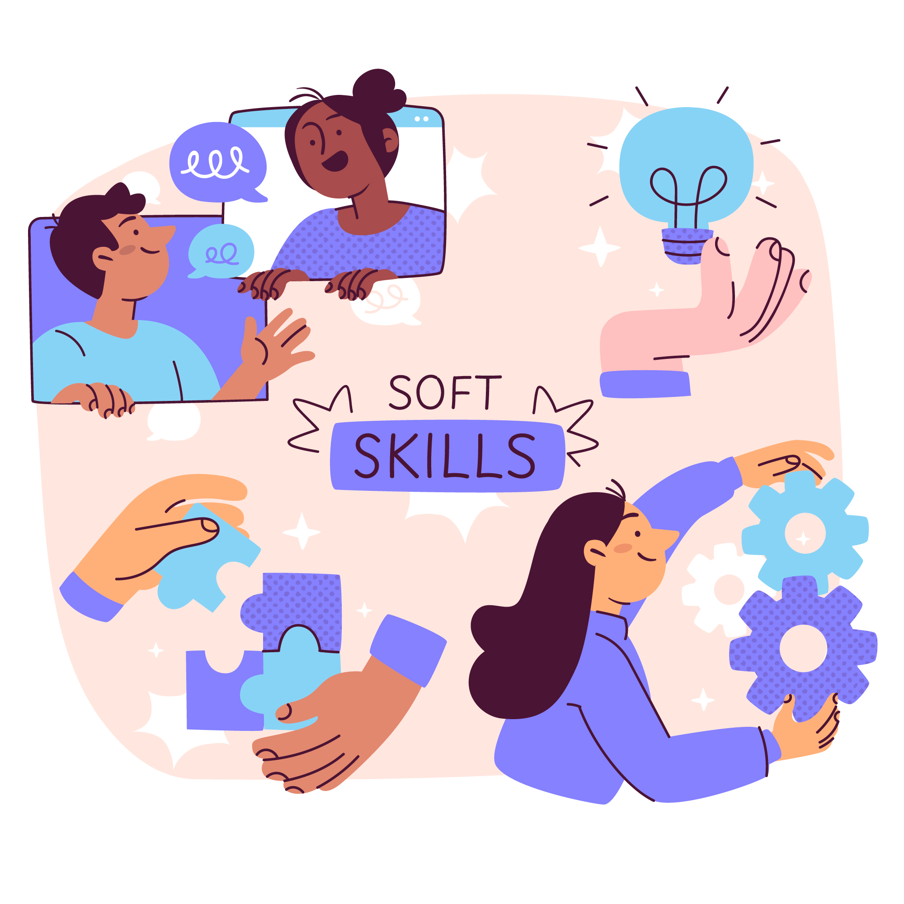

Soft Skills
- Comunicação: capacidade de expressar ideias claramente e ouvir atentamente
- Trabalho em equipe: habilidade de colaborar efetivamente com outros
- Resolução de problemas: habilidade de encontrar soluções criativas
- Adaptabilidade: flexibilidade para lidar com mudanças
- Inteligência emocional: capacidade de gerenciar emoções próprias e compreender as dos outros
- Pensamento crítico: análise objetiva e avaliação de questões
- Gerenciamento de tempo: organização e priorização de tarefas
- Ética de trabalho: comprometimento, responsabilidade e profissionalismo
- Criatividade e Inovação
- Imaginação aplicada
- Experimentação
- Resiliência
- Liderança